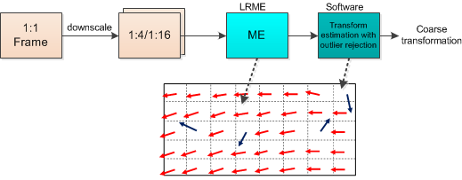
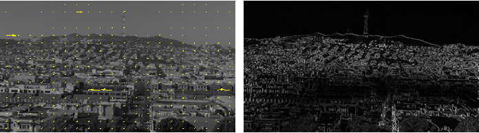
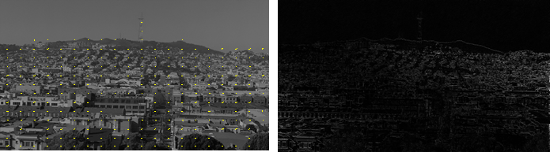
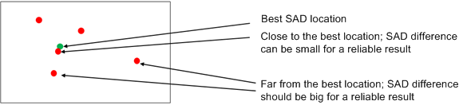
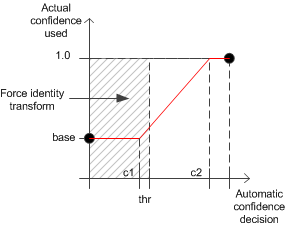

Low resolution motion estimation (LRME) finds the motion vector (MV) field between two low resolution (downscaled) images.
Tune LRME after IFE tuning. When TF is configured to use LRME, LRME should be tuned first.
- Coarse global transformation estimation (CGTE) provides an approximate transformation. This is performed in software.
- Refinement improves upon global transformation accuracy. This is implemented in TF.
- Works on low-resolution images (1:8 for 1080p; 1:16 for 4K)
- Performs subpixel motion estimation (ME) to improve the accuracy of MVs
- Provides robustness measurement for each block

For block matching ME, the preferred input image resolution is 240x136. The maximum input image resolution is 360x540.
The block-based search has a block size of 12x8 pixels, where the search size is either ±12x±8 or ±8x±6 pixels.



Blocks where the SAD is greater than the max_allowed_sad value, or where the tarMAD is less than the min_allowed_tar_mad are marked as invalid. If the SAD is too large, it means no good matches could be found (occlusions, small search area, etc.). If the tarMAD is too small, it means the block is noninformative (i.e., flat).
With the continuous robustness measure, far locations should have significant
SAD differences. Differences should be calculated between SADs at the best and
next-to-best locations. Continuous robustness measure requires a minimal SAD difference
at every distance from the best location.

- min_allowed_tar_mad – A value that is too large results in the rejection of good (i.e., informative) blocks. A value that is too small results in pure noise blocks being considered as informative blocks.
- max_allowed_sad – A value that is too large results in local motion that is considered global. A value that is too small results in the rejection of informative blocks.
- robustness_measure_dist_map – Set the first entry to 0. Any set values that are too large result in the rejection of informative blocks (e.g., blocks with medium or high information content. Any set values that are too small result in the acceptance of ambiguous blocks (e.g., aperture issues).
- enable_transform_confidence – Enables or disables the use of transform confidence.
- transform_confidence_mapping_base, transform_confidence_mapping_c1, and transform_confidence_mapping_c2 – Mapping function (linear with saturation) from automatically calculated transform confidence to actually use the transform confidence. The final transform confidence directly affects temporal blending, where zero confidence results in no temporal blending.
- transform_confidence_thr_to_force_identity_transform – When transform confidence (before mapping) is below the set threshold, the transform is replaced with identity transform. Hysteresis is applied on this parameter to avoid excessive switching.
